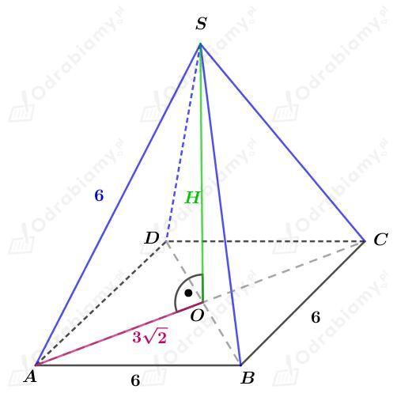
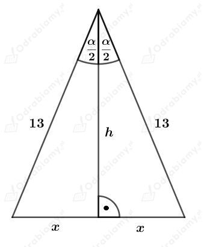
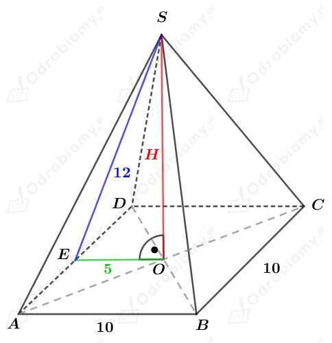
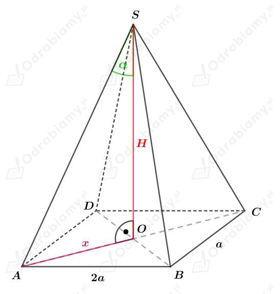

| Wysokość czworościanu foremnego o krawędzi a wyraża się za pomocą wzoru: a jego objętość - za pomocą wzoru: |
a)
Dany jest czworościan foremny o krawędzi długości a.
Pole powierzchni całkowitej każdego czworościanu foremnego jest zbudowane z czterech trójkątów równobocznych o boku długości a.
Z treści zadania wiemy, że pole powierzchni całkowitej tego czworościanu foremnego jest równe 36√3 cm2.
Korzystając ze wzoru na pole trójkąta równobocznego mamy:
Obliczmy objętość tego czworościanu. Mamy:
b)
Dany jest czworościan foremny o krawędzi długości a.
Z treści zadania wiemy, że objętość tego czworościanu wynosi 18√2 cm2.
Korzystając ze wzoru na objętość czworościanu foremnego otrzymujemy:
Pole powierzchni całkowitej każdego czworościanu foremnego jest zbudowane z czterech trójkątów równobocznych o boku długości a.
Obliczmy pole powierzchni całkowitej tego czworościanu. Korzystając ze wzoru na pole trójkąta równobocznego mamy:
| Objętość ostrosłupa Objętość dowolnego ostrosłupa wyraża się za pomocą wzoru: gdzie Pp jest polem powierzchni podstawy, a H - długością wysokości tego ostrosłupa. |
a)
Dany jest ostrosłup prawidłowy czworokątny. Podstawą takiego ostrosłupa jest kwadrat o boku długości a.
Wiedząc, że obwód podstawy tego ostrosłupa jest równy 24 cm mamy:
Wyznaczmy pole powierzchni podstawy tego ostrosłupa. Mamy:
Wyznaczmy objętość tego ostrosłupa. Mamy:
b)
Dany jest ostrosłup prawidłowy trójkątny. Podstawą takiego ostrosłupa jest trójkąt równoboczny o boku długości a.
Wiedząc, że obwód podstawy tego ostrosłupa jest równy 24 cm mamy:
Wyznaczmy pole powierzchni podstawy tego ostrosłupa. Korzystając z wzoru na pole trójkąta równobocznego mamy:
Wyznaczmy objętość tego ostrosłupa. Mamy:
c)
Dany jest ostrosłup prawidłowy sześciokątny. Podstawą takiego ostrosłupa jest sześciokąt foremny o boku długości a.
Wiedząc, że obwód podstawy tego ostrosłupa jest równy 24 cm mamy:
Wyznaczmy pole powierzchni podstawy tego ostrosłupa. Korzystając z wzoru na pole trójkąta równobocznego mamy:
Wyznaczmy objętość tego ostrosłupa. Mamy:
| Objętość ostrosłupa Objętość dowolnego ostrosłupa wyraża się za pomocą wzoru: gdzie Pp jest polem powierzchni podstawy, a H - długością wysokości tego ostrosłupa. |
Dany jest ostrosłup prawidłowy czworokątny. Niech a będzie długością krawędzi podstawy, która jest kwadratem.
Z rysunku wnioskujemy, że ściany boczne ostrosłupa są trójkątami równobocznymi o boku długości a.
Wiedząc, że
otrzymujemy równanie:
Rysunek:

Korzystając z twierdzenia Pitagorasa dla trójkąta AOS mamy:
Wyznaczmy objętość tego ostrosłupa. Mamy:
| Objętość ostrosłupa Objętość dowolnego ostrosłupa wyraża się za pomocą wzoru: gdzie Pp jest polem powierzchni podstawy, a H - długością wysokości tego ostrosłupa. |
Narysujmy ścianę boczną tego ostrosłupa:

Wiemy, że:
Korzystając z definicji funkcji cosinus dla trójkąta prostokątnego mamy:
Korzystając z twierdzenia Pitagorasa mamy:
czyli
Rysunek:

Korzystając z twierdzenia Pitagorasa dla trójkąta EOS mamy:
Obliczmy objętość tego ostrosłupa. Mamy:
| Objętość ostrosłupa Objętość dowolnego ostrosłupa wyraża się za pomocą wzoru: gdzie Pp jest polem powierzchni podstawy, a H - długością wysokości tego ostrosłupa. |
Rysunek:

Wyznaczmy długość przekątnej podstawy. Korzystając z twierdzenia Protagorasa mamy:
Zatem
Korzystając z definicji funkcji cotangens dla trójkąta prostokątnego AOS mamy:
Wyznaczmy objętość tego ostrosłupa. Mamy: